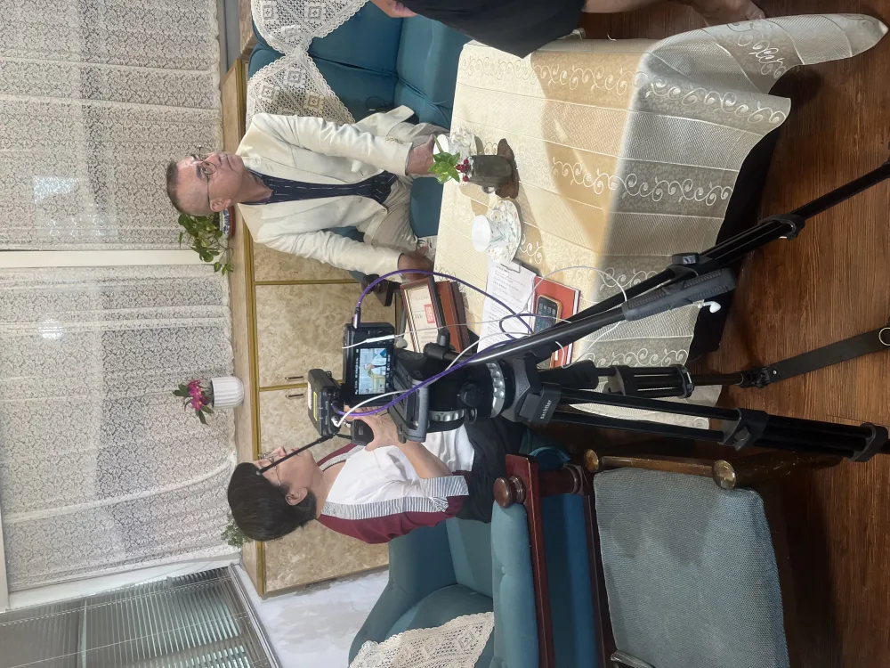

大事記
三十多年，一條幕後的路
1991
華視晚間新聞記者
中華民國八十年國慶特別報導，二十位記者共同播報，名單中有張瓊文。電視生涯的起點。
三台時代
導播與製作人
在台視、中視、華視並立的年代歷練導播與製作人工作。（教練提供，確切台別與年份待確認）
2008
新唐人電視台經理
新唐人全球系列大賽期間，台內以「張經理瓊文」稱之，負責台灣報名相關事務。
2010
《廚娘香Q秀》製作人
新唐人亞太電視台美食節目開播，瓊文擔任節目製作人至今，十六年不間斷。
2012 前後
《美麗心台灣》企劃
兼任《美麗心台灣》節目企劃，走訪台灣各行各業的經營者與職人。
2021
台灣新唐人國際文化學會理事
司法院法人登記公告：第 6 屆理事名單中有張瓊文。
2026
兩個節目持續播出
《廚娘香Q秀》第 916 集、《美麗心台灣》第 597 集，仍在新唐人亞太台播出。

導播台——概念插畫
同名提醒
叫「張瓊文」的有好幾位不同的人：影集《何百芮的地獄戀曲》導演、大法官被提名人、滑冰選手、圖卡講師、繪本作家、學校教師——都不是本頁的瓊文。本頁只寫新唐人電視台這一位。